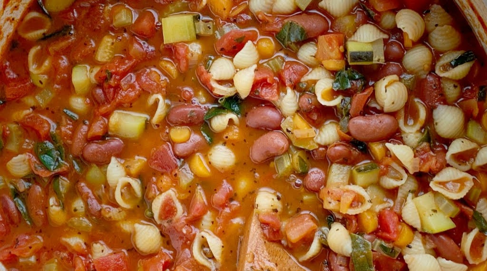
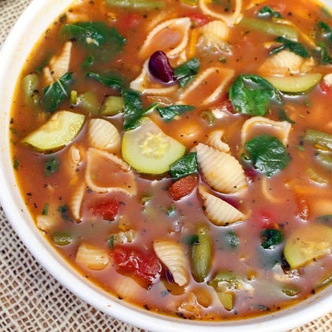
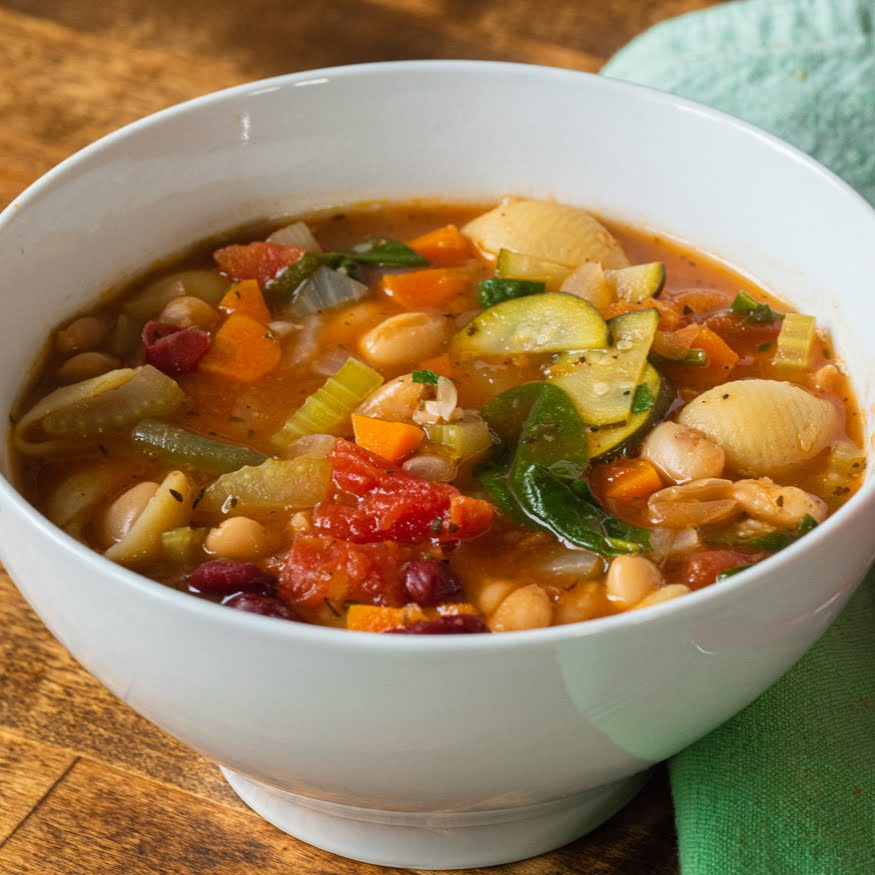
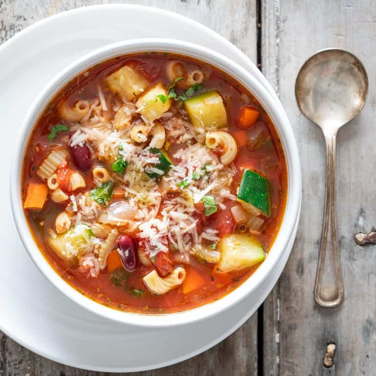

Minestrone Soup
Have you ever been to Olive Garden? If you have, you may be familiar with one of their soup options, Minestrone. This wonderful mixture of spinach, zucchini, celery and more, will fill you up and is a great source of vegetables. This soup is so easy to make for a large group and will impress all your friends.

Ingredients
- 3 Tbsp olive oil
- 1 cup white onion, minced
- 1/2 cup zucchini, chopped
- 1/4 cup celery, minced
- 4 cups vegetable broth
- 15 oz can red kidney beans, drained
- 15 oz can small white beans, drained
- 14 oz can diced tomatoes
- 1/2 cup carrot, shredded
- 3 cups hot water
- 4 cups baby spinach
- 1/2 cup seashell pasta
- 4 1/2 tsp italian seasoning

Directions
- Heat olive oil over medium heat in a large soup pot
- Sauté onion, celery, and zucchini in oil for 5 minutes
- Add vegetable broth, drained tomatoes, beans, carrots, hot water, spices to pot
- Bring soup to a boil, then reduce heat and allow to simmer for 20 minutes
- Add pasta and cook for an additional 20 minutes
- Add spinach and serve

"I'll never have to go to Olive Garden again! This copycat version is on point."
"It seems like a lot of ingredients, but making the soup is so easy. Just chop and put it in the pot!"
"Definitely one of my new favorite recipes. My kids and I love this soup."